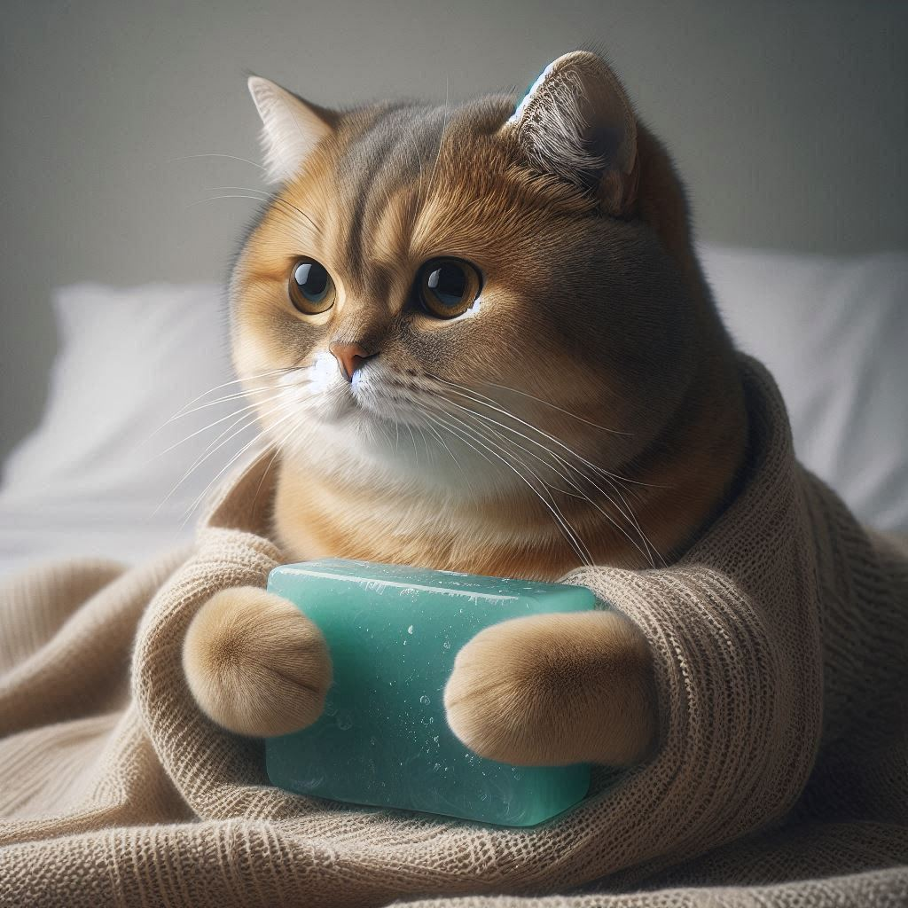

Как это увлечение появлось в моей жизни

Мыловарение появилось в моей жизни, когда я искала творческое занятие, которое помогло бы расслабиться и проявить фантазию. Однажды попробовав сделать мыло своими руками, я сразу влюбилась в этот процесс.